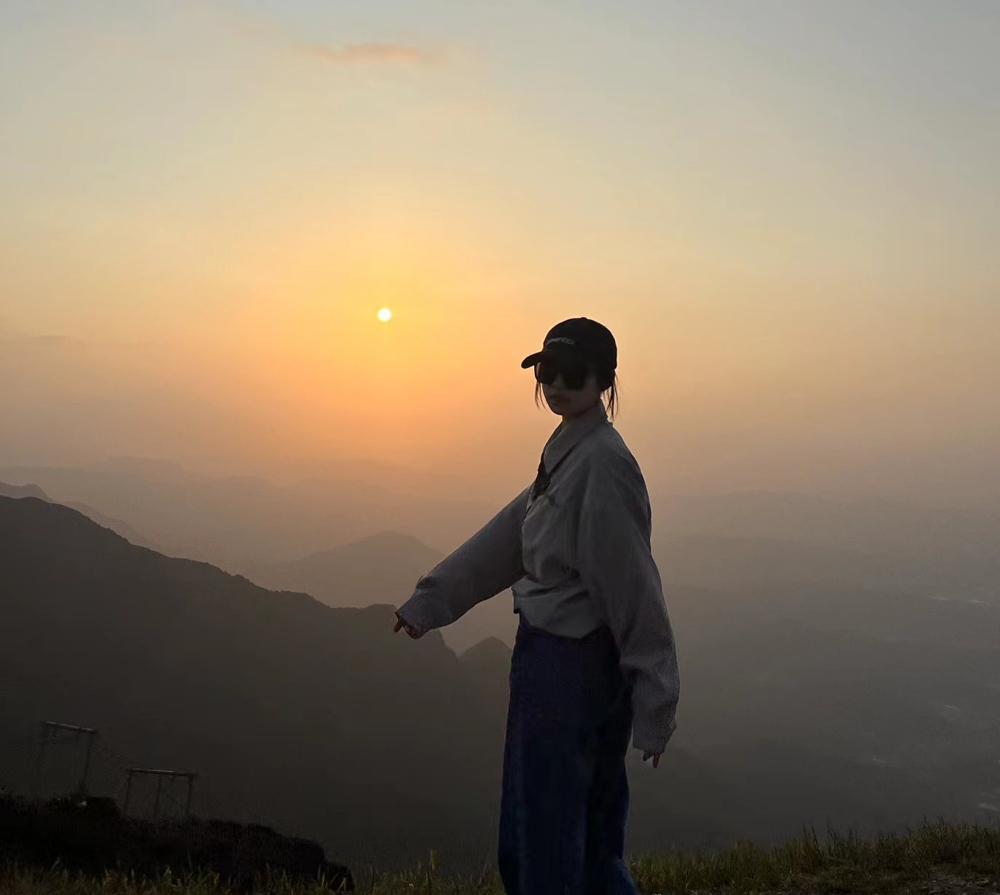

担任项目主持人参加第三十五届博文杯
参加第七届点子大赛
联合汤达人参加助农电商比赛
参加第三十七届博文杯
担任项目负责人参加第十届明理杯
通过参加各种各样的创新创业项目，我可以从中拓展自己，在专业知识以外更多的探索新道路， 凭借自己的奇思妙想为社会功能贡献一份力量，为自己积累比赛经验，为以后的工作奠定基础
 积极参加歌手大赛和校运动会
积极参加歌手大赛和校运动会
积极参加文体项目，不仅是个体身心健康发展的重要组成部分， 也是促进社交互动、培养团队合作精神和丰富生活经历的重要途径。 参与体育项目能够有效提高身体的灵活性、协调性和耐力，降低患病风险，维护身体健康。 也有助于释放压力、缓解焦虑，增强自信心和自尊心，促进心理健康。 参与文艺活动，有助于我们扩大自己的社交圈，丰富业余生活，提高生活质量， 也有利于我们提高自己的综合素养。

“大学生特种兵旅游”是一个网络梗，源自于中国大陆的一部电视剧《特种兵之深入敌后》。 在这个梗中，大学生被描绘为具有勇敢、坚韧和冒险精神的特种兵。 这个梗常常被用来形容那些在旅行中表现出超出常人的勇敢和冒险精神的大学生。
我经常利用周末或小长假前往附近的旅游景点，这两年里我去过北京、天津、长沙、南昌、萍乡（武功山）、郑州、洛阳、南京 紧张的时间让我们不得不快速游览，但也不妨是一种有趣的生活方式。